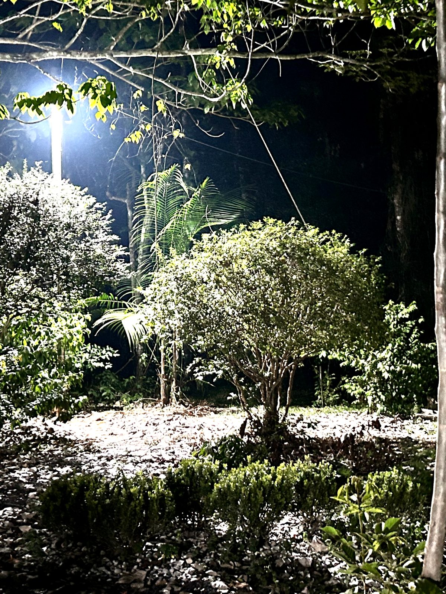
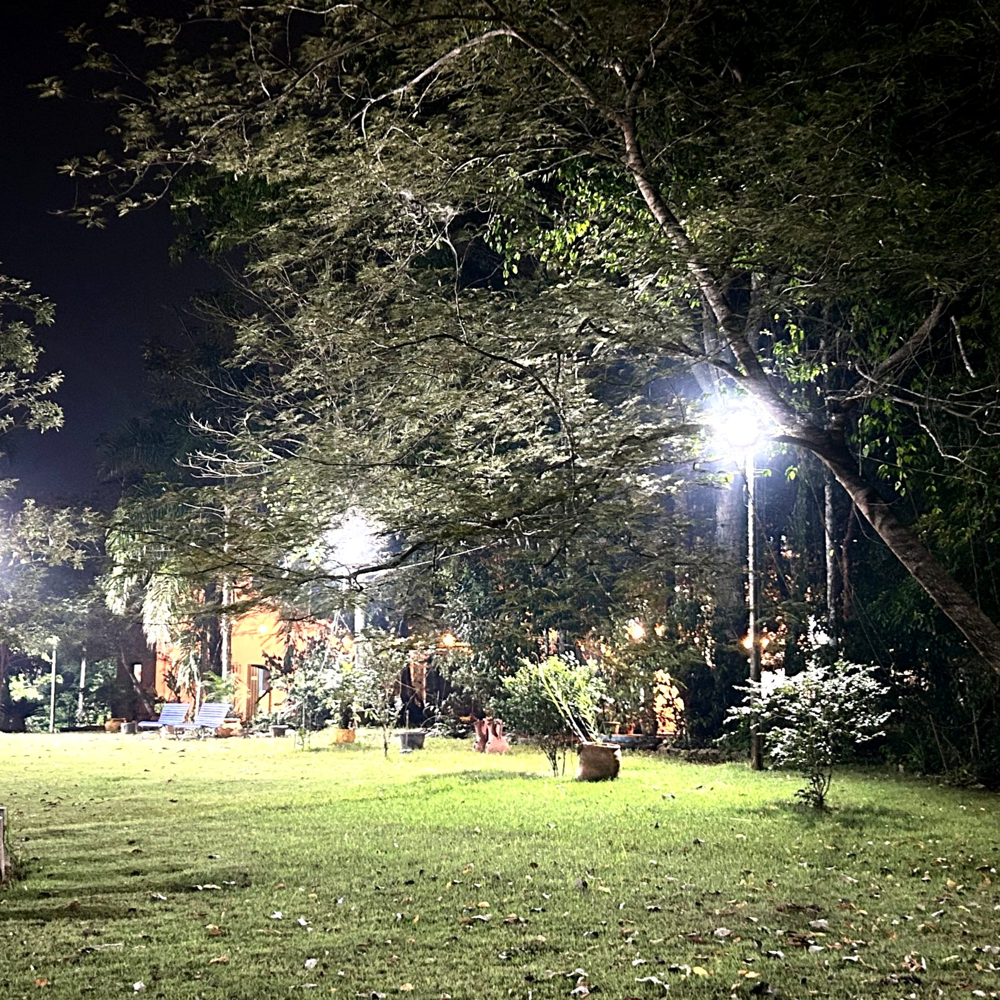
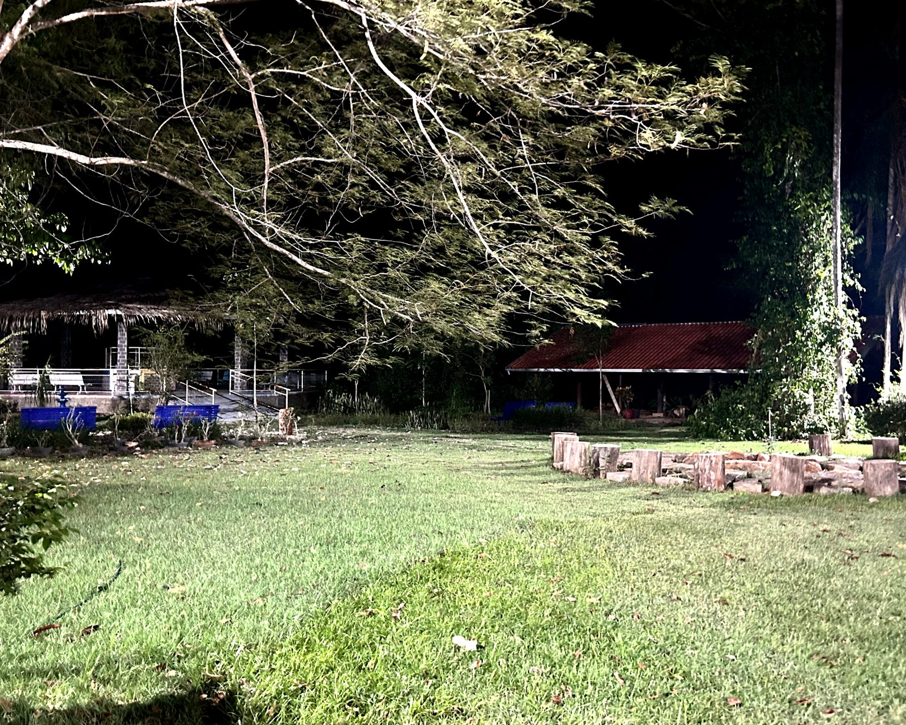

Centro de Regeneração Espiritual Casa de Jesus e Lar de Frei Manuel
Chácara
Divina Luz
Desde 1991, um lugar de fé, acolhimento e trabalho comunitário em Ji-Paraná. Uma história contada por quem ajudou a construí-la.
- 1991
- ano de fundação
- 80
- famílias cadastradas
- ~300
- atendimentos por mês
- 4
- fundadores ainda presentes
Em poucas palavras
Quem conta é o Fernando
O dirigente do centro apresenta a Chácara, a comunidade e o trabalho que acontece aqui.
Sobre
Um centro espírita com as portas abertas
O Centro de Regeneração Espiritual Casa de Jesus e Lar de Frei Manuel funciona na Chácara Divina Luz, no bairro Nova Londrina, em Ji-Paraná. É um centro espírita de linha apostólica, fundado em 13 de fevereiro de 1991.
Hoje reúne cerca de 80 famílias cadastradas, a maioria de Ji-Paraná e outras de Porto Velho, Ouro Preto do Oeste, Jaru e Cacoal. Além dos membros, recebe visitantes e pessoas que chegam em busca de ajuda espiritual.
A casa tem normas claras para quem frequenta: não se bebe, não se fuma e não se usa drogas. Para os membros, a convivência também passa pelos mutirões, que mantêm o espaço vivo e cuidado.
-
01
Acolhimento
Qualquer pessoa pode conhecer o centro e assistir aos trabalhos.
-
02
Cuidado
Quem deseja participar passa por conversa, aconselhamento e acompanhamento.
-
03
Discrição
A privacidade de cada pessoa que frequenta a casa é respeitada.
-
04
Comunidade
Mutirões e ação social feitos pelos próprios membros.
Trajetória
Mais de três décadas em Ji-Paraná
-
1991
A fundação
Em 13 de fevereiro de 1991, um pequeno grupo funda o centro em Ji-Paraná. Quatro dessas pessoas ainda frequentam a casa.
-
A Chácara
Um terreno doado
O terreno da Chácara Divina Luz chega por doação, e a comunidade passa a ter um espaço próprio para crescer.
-
Ação social
Para além dos trabalhos
O centro passa a atender egressos do sistema prisional em um projeto de reinserção e a colaborar com a APAC sempre que é convidado.
-
Hoje
Uma comunidade de famílias
Cerca de 80 famílias cadastradas, quatro sessões por mês e por volta de 300 atendimentos mensais.
Eu preciso fazer para quem precisa, e não para quem quer.
Ação social
A ajuda que chega a quem procura
O trabalho assistencial nasce da procura. O centro não mantém convênios fixos e escolhe ajudar onde a necessidade é real.
-
Contínuo
Cestas básicas e doações
Famílias que procuram o centro recebem cestas básicas e outras doações, conforme a necessidade.
-
Histórico
Reinserção social
Um projeto com o sistema prisional atendeu egressos e condenados, ajudando no retorno à vida em sociedade.
-
Quando convidado
Atendimentos na APAC
O dirigente atende na APAC de Ji-Paraná sempre que é chamado.
-
Contínuo
Mutirões comunitários
Os membros se reúnem para cuidar do espaço e das atividades da Chácara.
Fotos
A Chácara Divina Luz
Toque ou clique em uma foto para ampliar.






Visite
Como chegar e participar
Antes de vir
- A comunidade é aberta a quem quiser conhecer e assistir aos trabalhos.
- Para participar, é preciso conversar antes com o dirigente e passar pelo acompanhamento da casa.
- No espaço não se bebe, não se fuma e não se usa drogas.
- Fotos e filmagens só com autorização. A privacidade de quem frequenta vem em primeiro lugar.
Sobre este site
Este site foi feito em parceria com a comunidade, como parte do Projeto de Extensão Culturas, Memórias e Diversidades, do curso de Análise e Desenvolvimento de Sistemas da Universidade Anhembi Morumbi. O conteúdo passa pela aprovação da direção do centro antes de ser publicado. Nenhum hino é reproduzido, e só aparecem pessoas que autorizaram o uso da própria imagem.